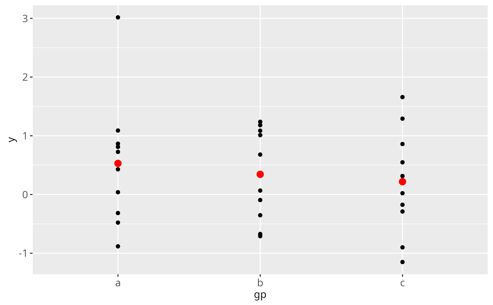
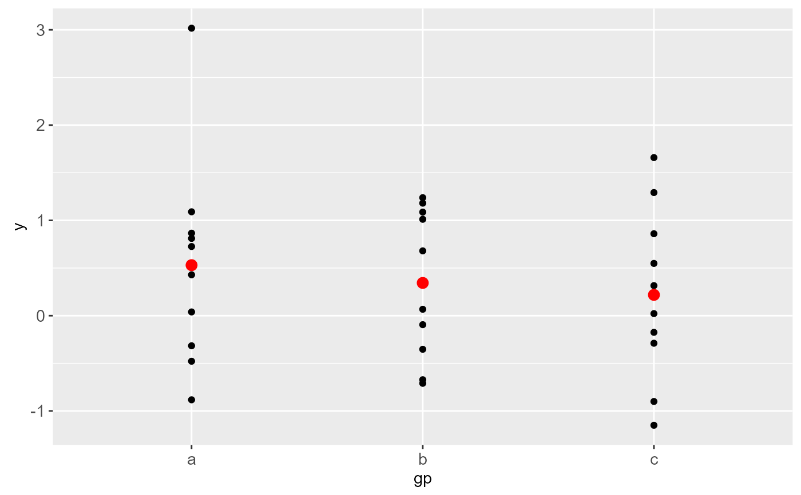
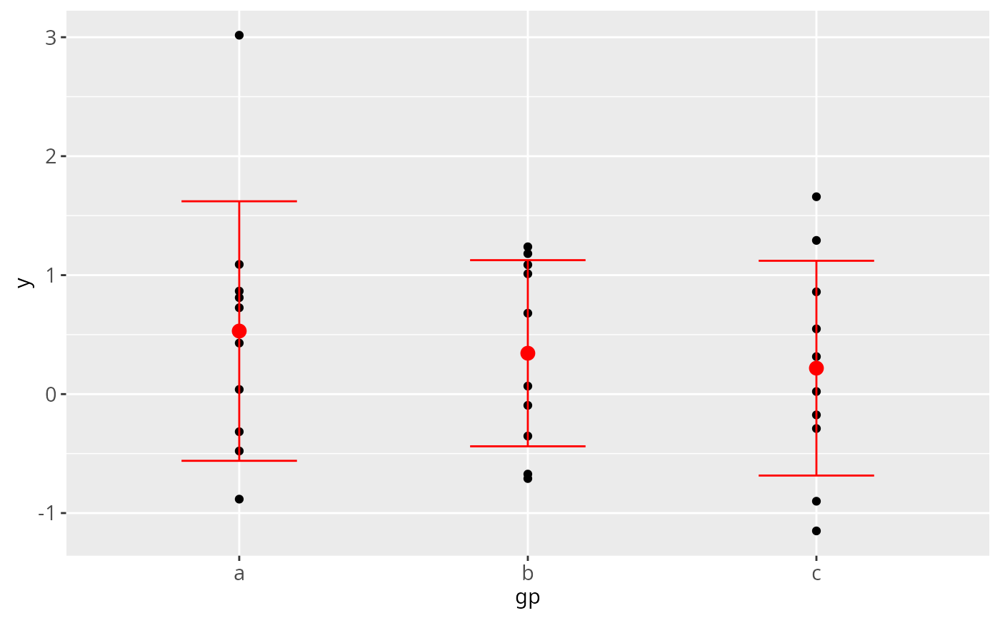

ggplot() initializes a ggplot object. It can be used to
declare the input data frame for a graphic and to specify the
set of plot aesthetics intended to be common throughout all
subsequent layers unless specifically overridden.
Usage
ggplot(data = NULL, mapping = aes(), ..., environment = parent.frame())Arguments
- data
Default dataset to use for plot. If not already a data.frame, will be converted to one by
fortify. If not specified, must be suppled in each layer added to the plot.- mapping
Default list of aesthetic mappings to use for plot. If not specified, must be suppled in each layer added to the plot.
- ...
Other arguments passed on to methods. Not currently used.
- environment
If an variable defined in the aesthetic mapping is not found in the data, ggplot will look for it in this environment. It defaults to using the environment in which
ggplot()is called.
Details
ggplot() is typically used to construct a plot
incrementally, using the + operator to add layers to the
existing ggplot object. This is advantageous in that the
code is explicit about which layers are added and the order
in which they are added. For complex graphics with multiple
layers, initialization with ggplot is recommended.
There are three common ways to invoke ggplot:
ggplot(df, aes(x, y, <other aesthetics>))ggplot(df)ggplot()
The first method is recommended if all layers use the same
data and the same set of aesthetics, although this method
can also be used to add a layer using data from another
data frame. See the first example below. The second
method specifies the default data frame to use for the plot,
but no aesthetics are defined up front. This is useful when
one data frame is used predominantly as layers are added,
but the aesthetics may vary from one layer to another. The
third method initializes a skeleton ggplot object which
is fleshed out as layers are added. This method is useful when
multiple data frames are used to produce different layers, as
is often the case in complex graphics.
Examples
df <- data.frame(gp = factor(rep(letters[1:3], each = 10)),
y = rnorm(30))
# Compute sample mean and standard deviation in each group
ds <- plyr::ddply(df, "gp", plyr::summarise, mean = mean(y), sd = sd(y))
# Declare the data frame and common aesthetics.
# The summary data frame ds is used to plot
# larger red points in a second geom_point() layer.
# If the data = argument is not specified, it uses the
# declared data frame from ggplot(); ditto for the aesthetics.
ggplot(df, aes(x = gp, y = y)) +
geom_point() +
geom_point(data = ds, aes(y = mean),
colour = 'red', size = 3)

# Same plot as above, declaring only the data frame in ggplot().
# Note how the x and y aesthetics must now be declared in
# each geom_point() layer.
ggplot(df) +
geom_point(aes(x = gp, y = y)) +
geom_point(data = ds, aes(x = gp, y = mean),
colour = 'red', size = 3)

# Set up a skeleton ggplot object and add layers:
ggplot() +
geom_point(data = df, aes(x = gp, y = y)) +
geom_point(data = ds, aes(x = gp, y = mean),
colour = 'red', size = 3) +
geom_errorbar(data = ds, aes(x = gp, y = mean,
ymin = mean - sd, ymax = mean + sd),
colour = 'red', width = 0.4)
